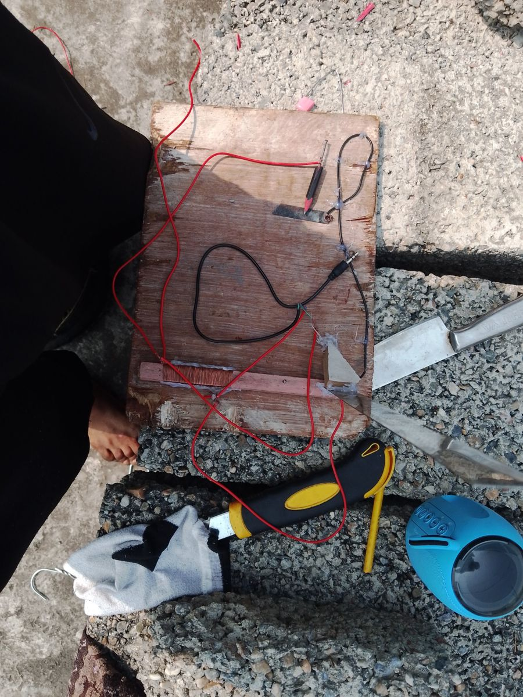
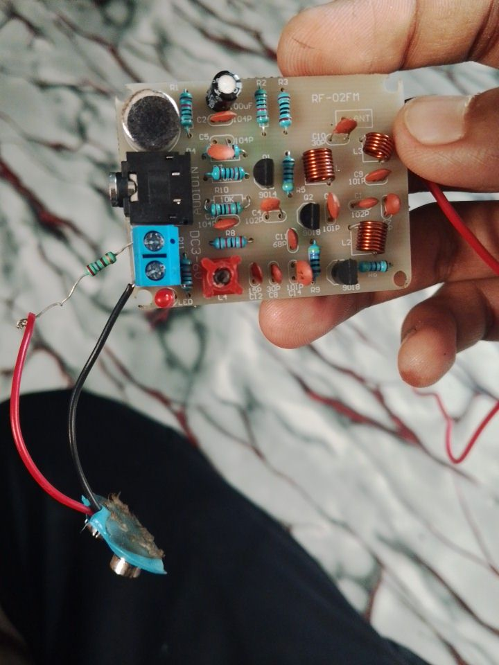
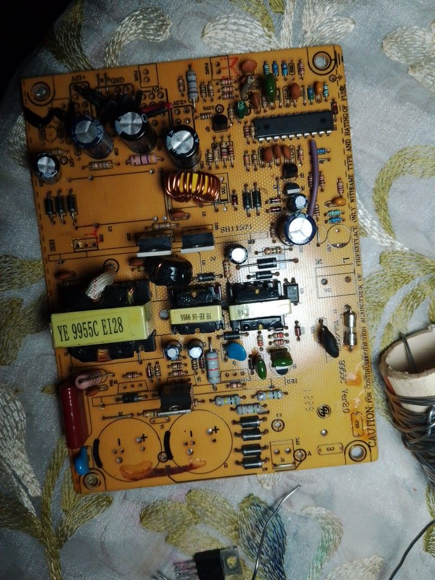
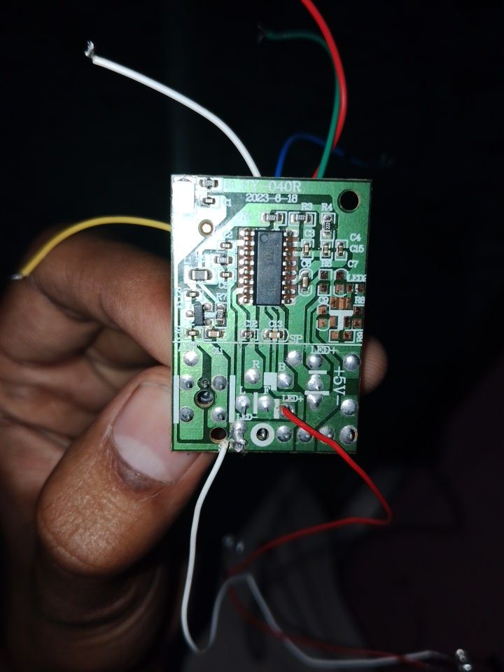
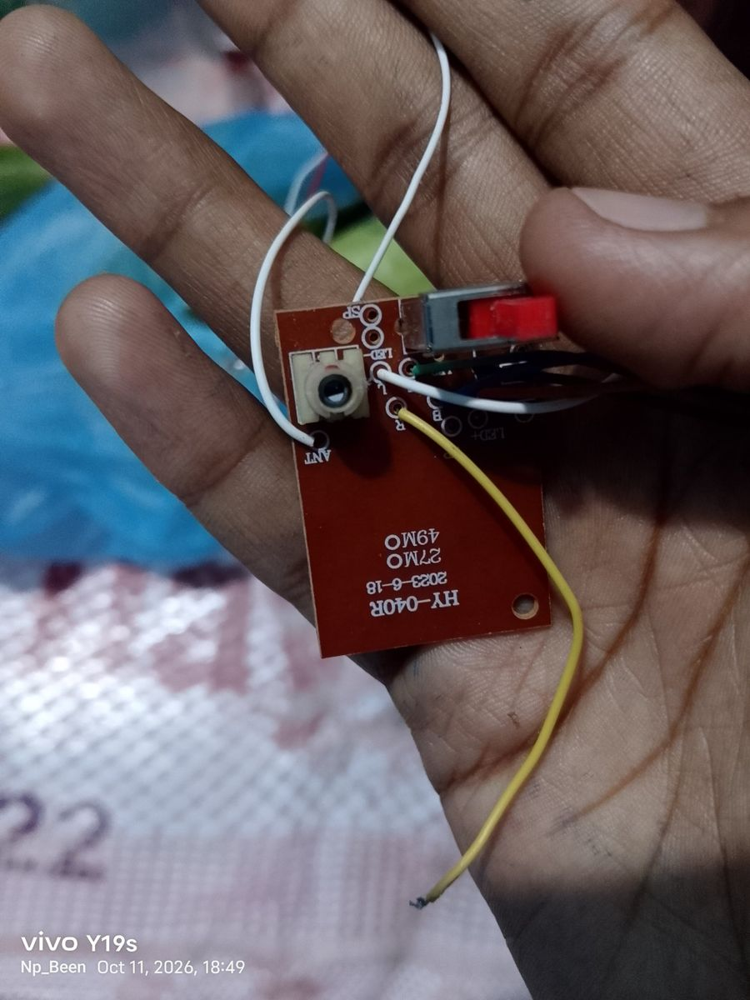
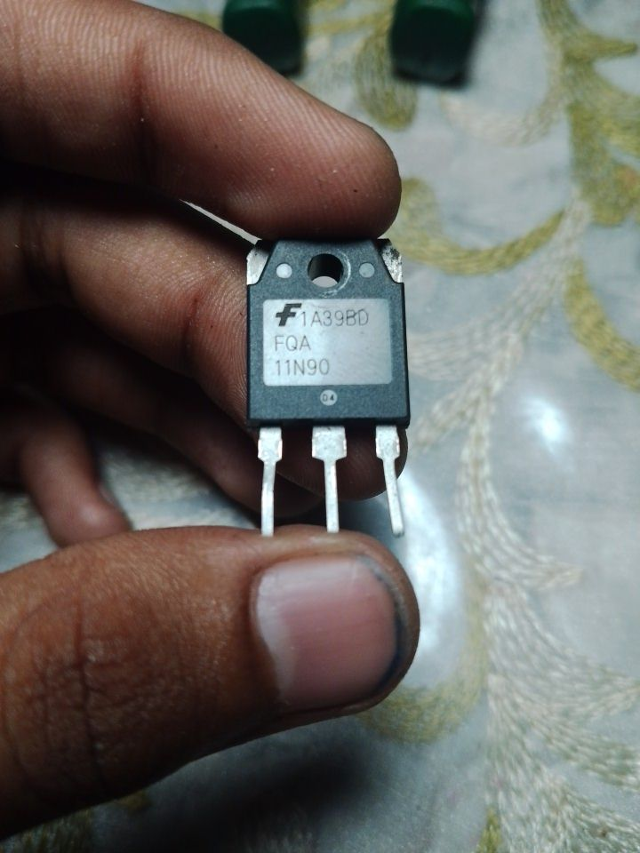
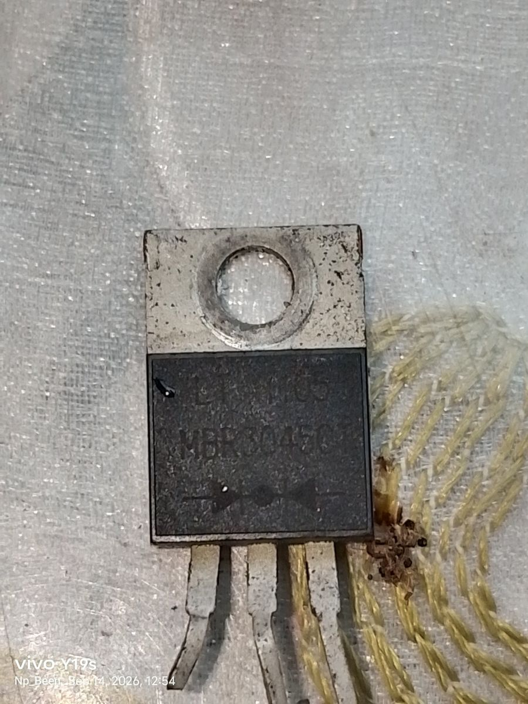
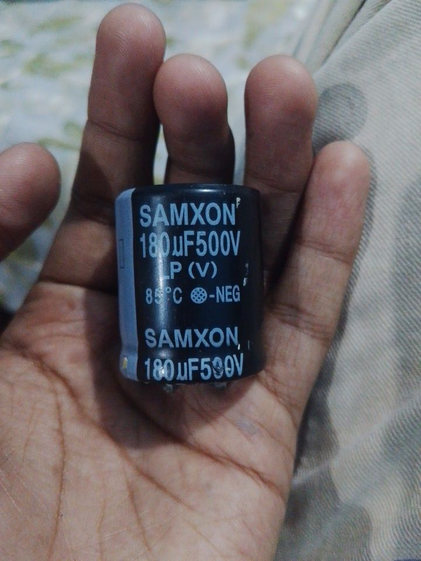
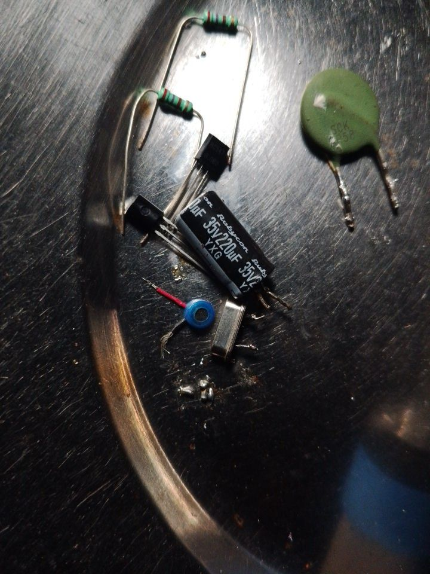

Electronics
Salvaged boards, kits and loose parts from my desk. Tap a photo to enlarge it.

A homemade build on a plywood board: a coil of copper wire, a 3.5 mm audio jack and long red wires, with a small Bluetooth speaker next to it.
A small FM transmitter board with a microphone, held up for scale.
A power supply board from a salvaged appliance, with transformers and large capacitors.
A remote-control receiver board marked HY-040R, with wires attached.
The other side of the same receiver board, with the antenna wire and switch.
FQA11N90 power MOSFET in a TO-3P package.
A rectifier in a TO-220 package, taken off a board.
A 180 µF 500 V electrolytic capacitor.
Loose resistors, transistors and a capacitor after desoldering.These photos are not instructions. Mains-powered boards and large capacitors can hurt you.